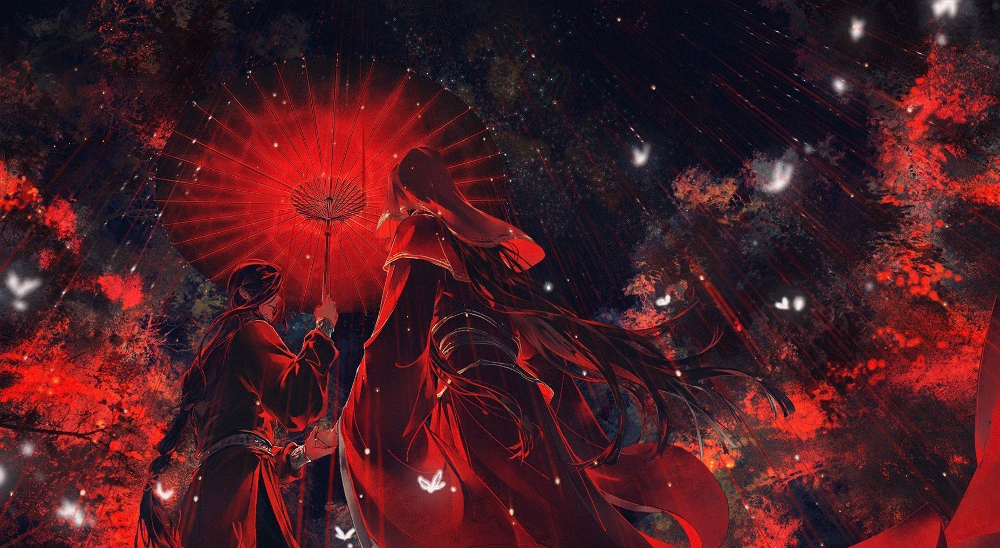

Heaven Official’s Blessing

Heaven Official's Blessing (Chinese: 天官赐福, pinyin: Tiān Guān Cì Fú) is a Chinese novel series written by Mo Xiang Tong Xiu (Chinese: 墨香铜臭).
Eight hundred years ago, Xie Lian was the Crown Prince of the Xian Le kingdom. He was loved by his citizens and was considered the darling of the world. He ascended to the Heavens at a young age; however, due to unfortunate circumstances, was quickly banished back to the mortal realm. Years later, he ascends again–only to be banished again a few minutes after his ascension.
Now, eight hundred years later, Xie Lian ascends to the Heavens for the third time as the laughing stock among all three realms. On his first task as a god thrice ascended, he meets a mysterious ghost who rules over the ghosts and terrifies the Heavens, yet, unbeknownst to Xie Lian, this ghost king has been paying attention to him for a very, very long time.